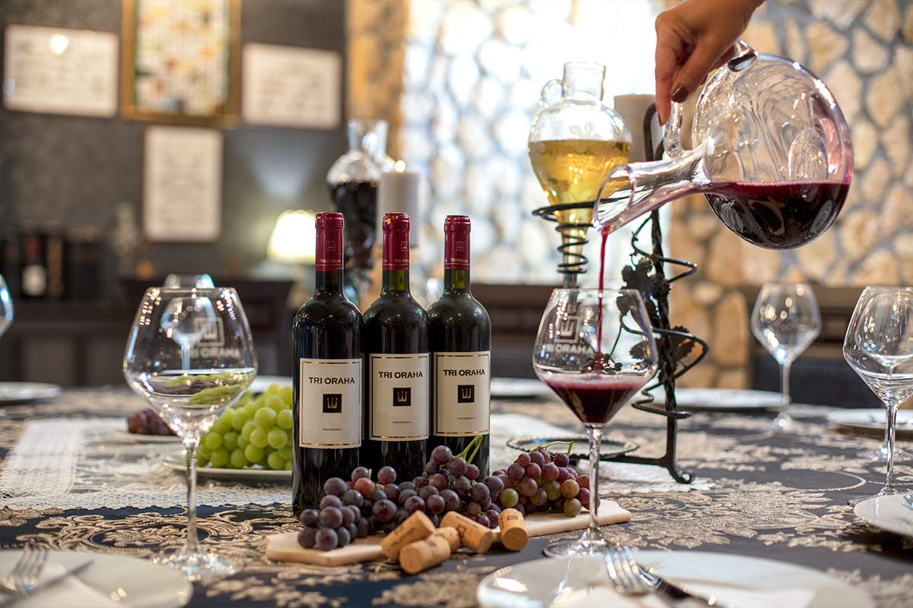

Kako
Snaga u genima
Hteli smo da pravimo istinski vrhunsko vino, a za to je potrebno grožđe koje može da ga da.
Izbor se nameće sam: to mogu biti samo legendarne bordoške sorte Cabernet Sauvignon, Cabernet Franc i Merlot,
jedine koje u genima nose velika vine...

Sigurnost u tlu
Legendarnim sortama je potrebno mesto o kom se pletu legende.
U Negotinskoj krajini, već poznatoj po vinskim legendama, kraj sela Crnomasnica na desnoj obali Timoka,
nalaze se strme, blago zaobljene padine idealnog sastava tla, okrenute ka jugu i uvek na vetru.
Baš tu, gde su svojevremeno i francuski majstori prepoznali savršen dom za rast njihovih najvećih sorti
i dolazili po svoje vino, nalazi se naš vinograd.

Sazrevanje u hrastovini
Nakon berbe, Tri Oraha sazreva kao nijedno vino:
najmanje pet godina u Barrique buradima korišćenim samo jednom, i bar još jednu gudinu u flaši.
Bez ikakvih aditiva i bez žurbe, s jednim delom svake berbe koji odležava i do 10 godina, vino dobija
jedinstvenu priliku da dosegne svoju urođenu veličinu.
Podrum vinarije Tri Oraha, jedini u kom se vino proizvodi na taj način, nalazi se nedaleko od Srebrnog jezera
kod Velikog Gradišta.
.jpg)
Stav u ukusu
Samo mi pravimo vino na taj način, s takvim odnosom prema kvalitetu, pristupom bez kompromisa
i toliko poštovanja.
Naš cilj je samo istinski kvalitet, užitak i prestiž, koji će pravi poznavaoci prepoznati.
Zato je Tri Oraha na blind tastingu pobeđivalo i najprestižnija svetska vina.
Zato je Tri Oraha...
